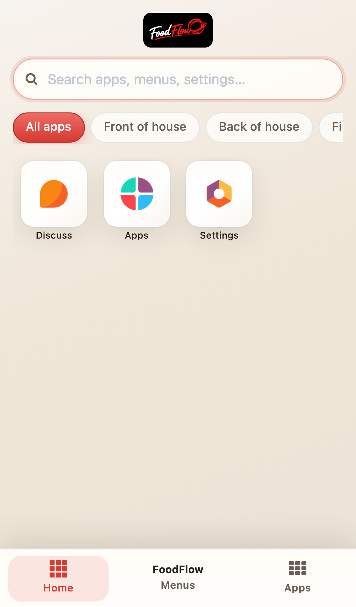

Desktop — warm app launcher & hospitality surfaces

Mobile — touch-friendly launcher & bottom navigation
Back office hospitality — no POS changes
Theme Basic is the free entry point to FoodFlow branding. Your staff get a comfortable restaurant workspace in Odoo; your POS stays standard until you upgrade to Pro.
FoodFlow branding
Navbar, favicon, login, and user menu white-label. FoodFlow details card in the app launcher.
Enterprise-style launcher
Community gets a polished home menu with categories, search, and mobile bottom bar.
Daily staff UX
Cream backgrounds, soft cards, forms, lists, kanban, and Discuss tuned for back-of-house teams.
Want POS v2 + FoodFlow sync?
Upgrade to FoodFlow Theme Pro + FoodFlow Connector with a FoodFlow subscription — POS channel pills, product cards, live sync, and revenue dashboard.
See Theme Pro Start FoodFlow trialFoodFlow · foodflo.app · Odoo 17 / 18 / 19 · Community & Enterprise · LGPL-3